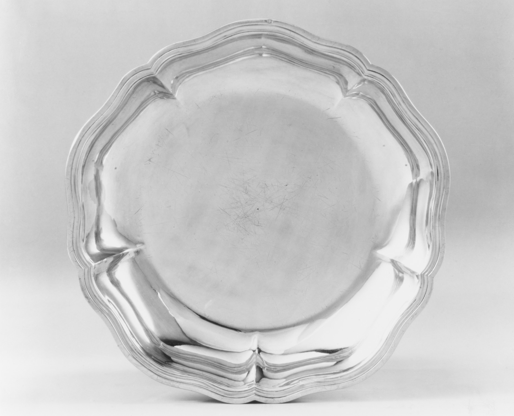
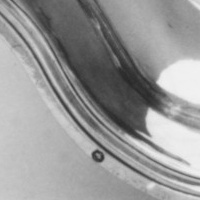

A ring and a dot
On the paired reverses, circular traces recur near the rim. Their positions meet more closely than their interiors do.




What repeats
The two records title the dishes “one of a pair,” give Jean-Louis Morel as maker, and date both 1763–64. In the reverse views, each trace lies near the outer rim in a lower sector. That is enough to make their placement worth comparing within the pair.
What doesn't follow
One trace looks filled, the other outlined. The photographs do not establish that they came from the same punch, and neither Met record names them as hallmarks or discharge marks. Similar placement supports a shared question, not a shared answer.
Now, one readable head
Study 31 links the Getty's Mark 9.3: a pointer head in an oval, placed by the catalogue on the proper left lip of a sauceboat. This gives the 1762–68 discharge a clear, located comparator. Its close-up is much more magnified than these equal-pixel Met crops.
What the circles remain
The .169 trace still looks filled and the .170 trace open. Neither crop resolves a head inside the outline, and neither Met record names the impressions. The Getty image clarifies what a readable head looks like; it does not identify either Morel mark or rule the class out.
The full views are shown with the dish rims aligned to a similar display width; the second source image is enlarged within its frame. The two detail crops have equal pixel bounds, not a shared physical scale. Each image retains its own photographic surface and contrast.
Jean-Louis Morel, Dish (one of a pair), silver, Paris, 1763–64. The Metropolitan Museum of Art, 48.187.169 and 48.187.170. Public Domain. The records share a title, maker, date, and material; they do not identify the rim traces. Comparator: Getty catalogue 9, Mark 9.3 (CC BY-NC 4.0; linked, not reproduced).